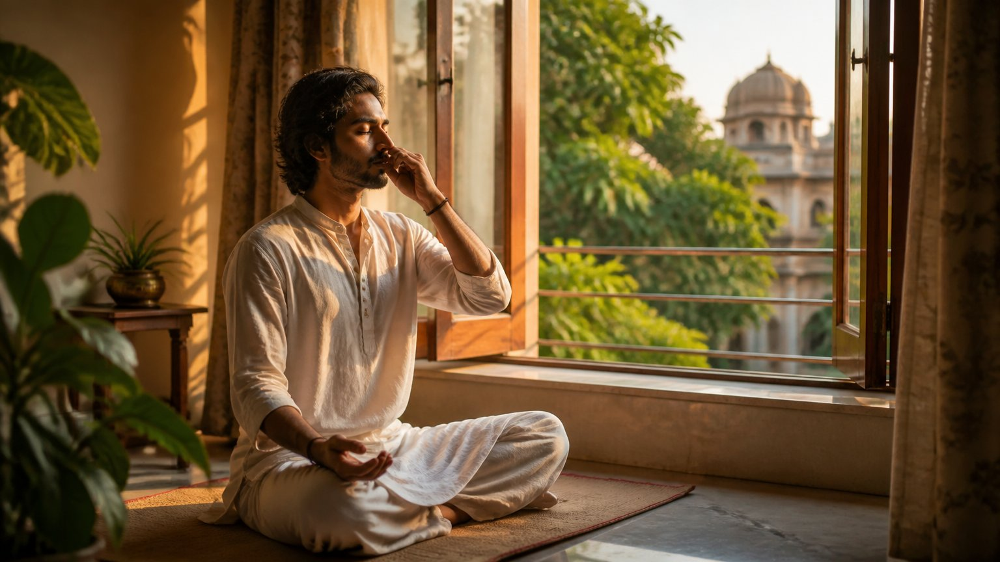

स्थिर मन वाला नेता क्यों चाहिए?
जब किसी बड़े कार्य के लिए मैदान में उतरना होता है, तो कोई एक नेता सबको साथ लेकर चलता है। पर अक्सर समस्या यह होती है कि वह नेता अथर्व नहीं होता।
यहां विरोध न करने की बात नहीं है। अधर्म के विरुद्ध खड़ा होना है, आवश्यकता हो तो लड़ना भी है। पर लड़ने वाला मन कैसा है, यही असली प्रश्न है।
थर्व का अर्थ है चंचल, डगमगाता हुआ (unsteady)। अथर्व का अर्थ है शीतल और स्थिर (calm and stable)। ऐसे ही स्थिर मस्तिष्क वाले गणाधिपति (गण, यानी समूह, का स्वामी) की आवश्यकता है, और उसके लिए साधना (spiritual practice) है।
"मैं तो नेता बनने वाला नहीं हूं"
आप सोच सकते हैं, मुझे इससे क्या? पर आप अपने घर के नेता हो सकते हैं। और घर छोड़िए, अपने स्वयं के जीवन के नेता तो आपको होना ही चाहिए। हमें अपना जीवन अपनी इच्छा के अनुसार चलाने में सक्षम होना चाहिए, हजार लोगों का दास नहीं बनना चाहिए।
आपके भीतर का गण
आपका अपना भी एक गण है: शरीर, मन, बुद्धि, चित्त और आत्मा। इस पूरे समूह के नेता आप हैं। और "आप" अर्थात कौन? आत्मा।
जब मैं उस ओंकार स्थिति में जाता हूं, तभी मेरा मन मेरे अधीन होता है, एक राजा की भांति। तभी बुद्धि नियंत्रण में रहती है, शरीर मेरी सुनता है और कहीं बहकता नहीं। चित्त, श्वास और प्राण भी मेरे नियंत्रण में आते हैं।
क्या आपकी श्वास आपकी सुनती है?
जब आप दिन भर भागदौड़ करते हैं, रजोगुण (बेचैन सक्रियता का गुण) में डूबे रहते हैं, तब क्या आपकी श्वास आपकी सुनती है? वह तेज-तेज चलती है। हृदय भी आपकी नहीं सुनता।
पर वह सुनेगा, जब आप उसे अनुकूल वातावरण देंगे। उत्तेजित करने वाली चीजों से दूरी, और प्राणायाम व आसन। यह आपका चुनाव है। आप शरीर से कह सकते हैं, "आराम से प्राणायाम कर", और मन से, "शांत हो।" तब प्राण भी आपके अधीन होगा।
हमारी आयु प्राण पर, श्वास पर टिकी है। वर्ष बढ़ाने हैं या घटाने हैं, यह आपके हाथ में है।
शरीर, मन, बुद्धि, चित्त, अहंकार, प्राण, ज्ञानमय कोश, आनंदमय कोश: इस पूरे गण के अधिपति आप स्वयं हैं, आत्मा। यह बात केवल बाहर के किसी राजा के लिए नहीं है।
आपके भीतर के गण में आज कौन राज कर रहा है: आप, या आपकी बेचैनी?

असली नास्तिक कौन?
जिसकी आत्मा उसके नियंत्रण में आ गई, उसी में आत्मविश्वास आता है। स्वामी विवेकानंद कहते थे कि पुराना धर्म कहता था, जिसका भगवान पर विश्वास नहीं वह नास्तिक है; असली धर्म कहता है, जो स्वयं पर विश्वास नहीं करता वह नास्तिक है।
लाख पूजा-पाठ कर लो, पर यदि अपने लिए एक निर्णय भी नहीं ले सकते, तो बात अधूरी है।
"ऐसा ही होता है"
कोई कहता है, "क्या करूं, हमारे पति ऐसे ही हैं।" कोई कहता है, "हमारी सासू मां ऐसी हैं।" वे कोई भूत थोड़ी हैं! एक बार बोलकर तो देखना चाहिए।
यहां न्यायालय जाने या तलाक लेने की बात नहीं है। उपाय हैं: साम, दाम। पर यदि एक बार भी अपनी बात नहीं रखी, तो दासता पक्की हो जाती है। इसका अर्थ है कि भीतर की आत्मा का स्वर दब गया, आत्मविश्वास समाप्त हो गया, और हमने इसे जीवन का ढंग मान लिया। तब किसी भी स्थिति में मन प्रसन्न नहीं रहता।
क्या कोई ऐसी बात है जिसे आपने "ऐसा ही होता है" कहकर स्वीकार कर लिया है?
हारा हुआ मन, हारा हुआ राष्ट्र
दास की वृत्ति को सामने वाले का यशस्वी रूप ही दिखता है: वह जीता, मैं हारा। जब एक-एक मन हारता है, तो पूरा राष्ट्र हारता है। भारत को जब दास बनाया गया, तो कुल मिलाकर पूरा देश दास बन गया।
बहुत समय तक ऐसा रहे, तो हारा हुआ राष्ट्र विजेता राष्ट्र को आदर्श मानने लगता है। इसीलिए आज भी बहुतों को लगता है कि जो कुछ अंग्रेजी है, वही अच्छा है। विजेता थे अंग्रेज और मुगल, और अनजाने में भीतर का मन कहता है, "कम से कम वे शक्तिशाली तो हैं, तो सही भी होंगे।"
जबकि स्वभाव से हम जीवनमुक्त (जीते-जी मुक्त) हैं। आत्मा "अहं ब्रह्मास्मि" है; ब्रह्म ही ब्रह्म को पहचानने का प्रयत्न कर रहा है। बल ही जीवन है, और दुर्बलता मृत्यु है।
यह हर गुरु ने कहा है: स्वामी विवेकानंद ने, चाणक्य ने, और श्रीकृष्ण ने अर्जुन से।
घर में भी वही नियम
जो राष्ट्र पर लागू होता है, वही अपने ऊपर लागू करके देखिए। यदि घर में दासता सहती जा रही हूं, सहती जा रही हूं, तो मन हारा हुआ है, और सामने वाले विजेता बन गए। फिर भीतर से आवाज आती है, "चुपचाप सुन।" एक बिंदु के बाद वही अत्याचार जीवन का ढंग बन जाता है।
और यह अगली पीढ़ी तक जाता है। या तो बेटी को पहले से सिखाया जाता है, "संभलकर रहना, यह मत करना, वहां मत जाना", या विद्रोह में दूसरी अति: बहुत आक्रामक होकर बोलना। दोनों ही तरीके गलत हैं। रास्ता था अथर्व होकर, शांत होकर चलने का।
आपमें से कोई गणपति बन सकता है
यह बात केवल सिद्धांत नहीं है, व्यक्तिगत जीवन के लिए भी है। क्या पता, आपमें से कौन गणाधिपति बनेगा, कौन गणपति, कौन विनायक।
सिद्धांत से नहीं, शरणागति से
केवल पढ़ने-सुनने से यह नहीं होता। कठोपनिषद कहता है:
नायमात्मा प्रवचनेन लभ्यो न मेधया न बहुना श्रुतेन।
"यह आत्मा न प्रवचन से मिलती है, न मेधा (तेज स्मरण-शक्ति) से, न बहुत सुनने से।"
(कठोपनिषद १.२.२३)
फिर किससे? गुरु के पास जाकर शरणागति (पूर्ण समर्पण) से, जो उन्होंने कहा उसे चुपचाप सुनकर।
पूरी गीता सुनाने के बाद अंत में श्रीकृष्ण भी यही कहते हैं:
सर्वधर्मान्परित्यज्य मामेकं शरणं व्रज।
अहं त्वा सर्वपापेभ्यो मोक्षयिष्यामि मा शुचः॥
"सब धर्मों को छोड़कर केवल मेरी शरण में आ जा; मैं तुझे सब पापों से मुक्त कर दूंगा, शोक मत कर।"
(श्रीमद्भगवद्गीता १८.६६)
अंतिम उत्तर यही है।
कर्म-रहस्य: रहस्य किसे पता होता है?
इसे कर्म-रहस्य कहा जाता है। रहस्य का अर्थ ही है कि कोई तो उसे जानता है, वरना उसका कोई अर्थ नहीं। वह रहस्य हमारे लिए है, गुरु के लिए नहीं। गुरु-तत्व और परम-तत्व एक ही हैं; श्रीकृष्ण स्वयं कहते हैं कि साक्षात जीवित गुरु के रूप में मैं ही आता हूं।
जैसे बटन दबाते ही बत्ती जलना किसी आदिवासी को जादू लगेगा, और विज्ञान पढ़े व्यक्ति को नहीं। फिर भी इलेक्ट्रॉन कैसे चलता है, यह हम नहीं बता पाते। वैज्ञानिक ने भी परमाणु या इलेक्ट्रॉन देखा नहीं, फिर भी उसे उनके परिणाम पता हैं। वैसे ही, गीता कहती है, आत्मा को कोई "आश्चर्यवत्" देखता है, कहता है, सुनता है (श्रीमद्भगवद्गीता २.२९)। गुरु के लिए भी कुछ बातें आश्चर्य जैसी होंगी, पर रहस्य उन्हें ज्ञात होता है।
और वह रहस्य क्या है? चुपचाप पालन। उठ, तो उठ; बैठ, तो बैठ। जो एक व्यक्ति के आगे झुकता है, उसके आगे सारा संसार झुकता है।
संसार जिसके आगे झुकता है, वही गणपति है, वही विनायक है।
नारद भक्ति सूत्र: दुर्लभ, अगम्य, अमोघ
नारद भक्ति सूत्र भी यही कहता है। परमात्मा से जोड़ने वाले गुरु चाहिए, और ऐसा संग दैव से, बहुत दुर्लभता से मिलता है:
दुर्लभोऽगम्योऽमोघश्च।
(नारद भक्ति सूत्र ३९)
- दुर्लभ (rare): ऐसा गुरु मिलना कठिन है, और मिल भी जाए तो पहचानना कठिन। वह कभी टी-शर्ट में, कभी कुर्ते में, कभी धोती में, कभी सूट में आता है। स्वामी विवेकानंद सूट में भी थे और भगवा में भी; श्रीकृष्ण तो बांसुरी लेकर।
- अगम्य (hard to walk): पहचान भी लिया, तो उसका मार्ग कठिन है। हमें मुक्त रूप से जीने की आदत है, तो गुरु की बात सुनना दासता जैसा लगता है। पर यह दासता नहीं है।
- अमोघ (unfailing): फिर भी जिसने यह कर दिखाया, उसका फल निश्चित है।
तो प्रयत्न करके ऐसे गुरु तक पहुंचना है, और अगम्य मार्ग को गम्य बनाना है। फिर अमोघ फल पक्का है।
आगे सूत्र एक सुंदर पहेली रखता है: गुरु परमात्मा तक पहुंचाता है, और परमात्मा ही ऐसे गुरु से मिलाता है। अंत में कहता है, वास्तव में दोनों एक ही हैं, और जो यह जानता है वही सच्चा भक्त है:
तदेव साध्यताम् तदेव साध्यताम्।
"उसी को मोक्ष मिलेगा, उसी को जो चाहिए वह प्राप्त होगा।"
(नारद भक्ति सूत्र ४२)
फिर मैं करूं क्या? प्रेम एव कार्यम्
ऐसे गुरु और परमात्मा के पास जाकर मैं क्या करूं? डॉक्टर बनूं, इंजीनियर बनूं? उत्तर है: प्रेम एव कार्यम्, तेरा काम केवल प्रेम है।
यह फिल्मी प्रेम नहीं, जिसमें पेड़ों के बीच नायिका के साथ घूमा जाता है। वह कामवासना है, या मोह। प्रेम केवल पुरुष-स्त्री का नहीं होता: राष्ट्र से, प्राणियों से, प्रकृति से, धर्म से, माता-पुत्र में भी प्रेम होता है।
प्रेम का अर्थ है एकत्व (oneness)। माता को बेटा अपना ही अंग लगता है, क्योंकि वह उसी की नाल कटकर आया है। वैसा एकत्व जब राष्ट्र के साथ आता है, तो वैश्य भाव (लेन-देन का भाव) चला जाता है। तब मैं बदले में कुछ नहीं चाहता।
आपका प्रेम आज लेन-देन से चलता है, या एकत्व से?
प्रेम की दिशा भी अथर्व हो
एक नकारात्मक व्यक्ति भी आत्मघाती हमलावर बन जाता है। उसमें भी एक प्रकार का प्रेम आया है, पर उसका मार्ग भटका हुआ है, क्योंकि वह थर्व, अस्थिर मस्तिष्क से काम कर रहा है। इसीलिए प्रेम के साथ अथर्व मन चाहिए।
अथर्व मस्तिष्क बनाने के लिए और गणपति बनने के लिए यह पूर्णतः अनिवार्य है।
मुख्य बातें
- अथर्व अर्थात शीतल और स्थिर मन; सच्चे नेतृत्व की यही पहली शर्त है।
- आपके भीतर शरीर, मन, बुद्धि, चित्त, प्राण और कोशों का एक गण है, जिसके अधिपति आप, आत्मा, हैं।
- प्राणायाम, आसन और उत्तेजना से दूरी से प्राण और मन अधीन होते हैं।
- जो स्वयं पर विश्वास नहीं करता, वही असली नास्तिक है।
- अन्याय को "ऐसा ही होता है" कहकर स्वीकारना हारे हुए मन का लक्षण है; न चुप रहना सही, न अति आक्रामकता, रास्ता है अथर्व होकर बोलना।
- आत्मा प्रवचन, मेधा या बहुत सुनने से नहीं, गुरु के प्रति शरणागति से मिलती है।
- महापुरुष का संग दुर्लभ, अगम्य और अमोघ है; गुरु और परमात्मा एक ही हैं।
- साधक का काम है प्रेम, अर्थात एकत्व, जिसकी दिशा अथर्व मन तय करता है।